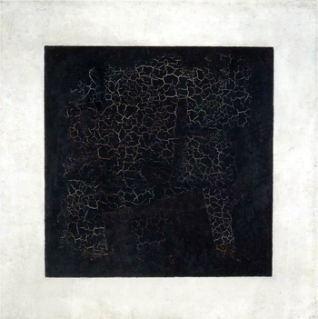

Black Square

FACTS
- It’s not a square – and it’s not black
- It has two dates of creation
- It’s actually a part of a triptych. When the ‘Black Supremacist Square’ was first exhibited in 1915, it was shown along with two other “main supremacist forms” – ‘Black Circle’ and ‘Black Cross’, which are less known than the ‘Black square’.
- It’s painted over another painting
- It’s not the first total black painting
- Malevich also painted ‘Red Square’ and ‘White Square’
"Black Square" is a painting by the Ukrainian avant-garde artist Kazimir Malevich, executed in the style of
Suprematism, most likely in 1915, when he lived in Russia. It is kept in the State Tretyakov Gallery in Moscow.